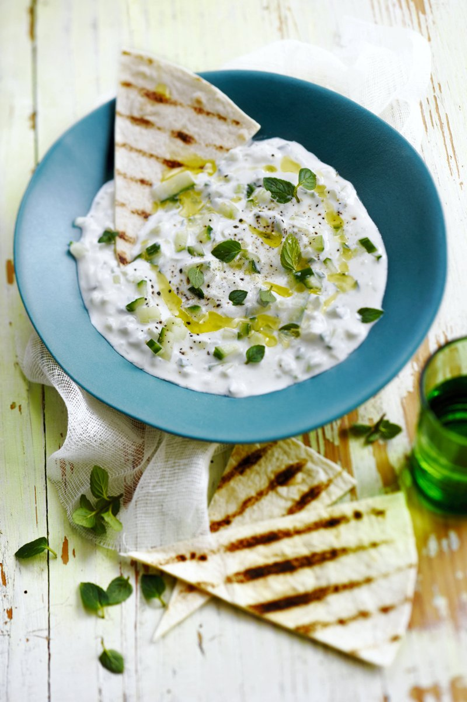

Dips et tartinades
Ingrédients
- 250 g de yaourt
- 1 c. à s. d'épices
- 15 c. à s. d'huile d'olive
- vinaigre
- 1 concombre râpé
- 330 g d'olives noires dénoyautées
- 10 g de câpres
- 10 cl d'huile d'olive
- 50 g d'olives vertes dénoyautées
- 100 g de tomates séchées à l'huile
- 2 c. à s. de câpres
- 1 tranche de pain de mie
- 70 g d'amandes entières grillées
- 6 pincées de sel de céleri
- 1 c. à s. de vinaigre balsamique
- poivre
- 250 g de cœurs d'artichauts
- 2 c. à s. d'huile
- 1 c. à c. de vinaigre balsamique
- 0.25 d'oignon
- 1 gousse d'ail
- 1 c. à c. de basilic
- sel
- 6 aubergines
- 4 oignons nouveaux
- 3 échalotes
- 3 gousses d'ail
- ciboulette
- persil
- 1 citron

Préparation
Étape 1
Tzatziki : mélanger 250 g de yaourt, 1 c. à s. d'épices, 1 c. à s. d'huile d'olive, un peu de vinaigre et 1 concombre râpé.
Étape 2
Tapenade : mixer au mixeur plongeant 200 g d'olives noires dénoyautées, 10 g de câpres et 10 cl d'huile d'olive.
Étape 3
Tapenade rouge : mixer 50 g d'olives vertes dénoyautées, 50 g d'olives noires dénoyautées, 100 g de tomates séchées à l'huile, 2 c. à s. de câpres, 1 tranche de pain de mie, 70 g d'amandes entières grillées, 6 pincées de sel de céleri, 2 c. à s. d'huile d'olive, 1 c. à s. de vinaigre balsamique et du poivre.
Étape 4
Artichonade : mixer 250 g de cœurs d'artichauts, 2 c. à s. d'huile, 1 c. à c. de vinaigre balsamique, 0.25 d'oignon, 1 gousse d'ail, 1 c. à c. de basilic, sel et poivre.
Étape 5
Caviar d’aubergine : cuire 6 aubergines 35min au four à 200ºC et gratter la chair. Rissoler 15min 4 oignons nouveaux, 3 échalotes et 3 gousses d'ail avec les aubergines.
Étape 6
Mixer avec 12 c. à s. d'huile d'olive, ciboulette, persil, 80 g d'olives noires dénoyautées (optionnel), le jus d’1 citron, sel et poivre.